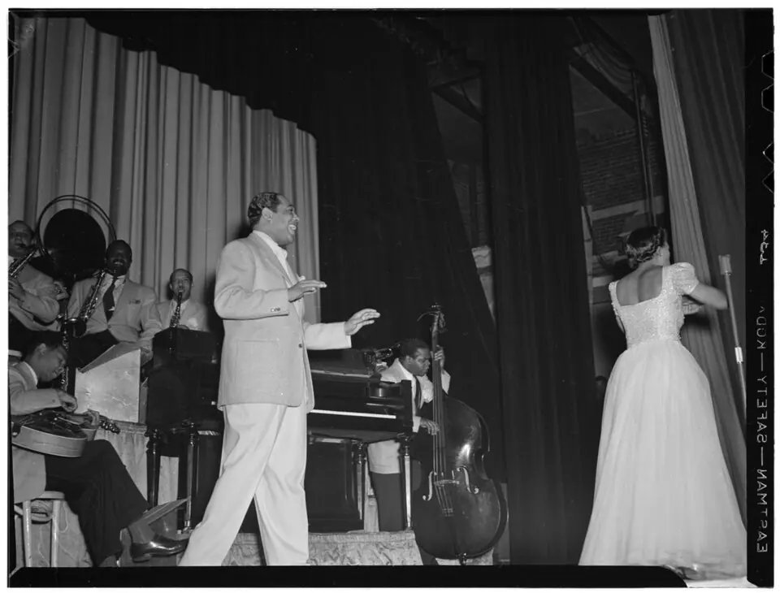

Why do we listen to music? — Report 01 · 11 songs
楽しくなりたいから
人はなぜ音楽を聴くのか。第1回の答えは、たぶんこれ。
「頑張れ」と説得してこないのに、勝手に口角が上がる11曲。ぜんぶ、このページの中で聴ける。
IN THIS ISSUE
 CHAPTER 01
CHAPTER 01 CHAPTER 02
CHAPTER 02 CHAPTER 03
CHAPTER 03 CHAPTER 04
CHAPTER 04 CHAPTER 05
CHAPTER 05 CHAPTER 06
CHAPTER 06 CHAPTER 07
CHAPTER 07 CHAPTER 08
CHAPTER 08 CHAPTER 09
CHAPTER 09 CHAPTER 10
CHAPTER 10 CHAPTER 11
CHAPTER 11人はなぜ音楽を聴くのか。
いちばん最初に浮かぶ答えは、「楽しくなりたいから」。
何もしたくない朝から、着替えて出かける夜、そして夜明けまで。11曲で、一日をたどってみる。
どの曲にも、楽しさが生まれた現場がある。スタジオにいた一人の楽天家。ボウリング場のあるビルの一室。知らない人の結婚式。9回ボツをくらった作曲家。妹を亡くして、街の色を失った作詞家。楽しい曲ほど、裏側はそう簡単じゃない。
この11曲の続きは、Spotifyのプレイリスト「多幸感ポップス」で。
目が覚めるだけで、いい日の始まりになる
Bill Withers - Lovely Day
アルバム『Menagerie』 ／ 1977
1977年のアルバム『Menagerie』から。曲を用意したのはスキップ・スカーボロー。そこにウィザースが言葉を乗せたAmerican SongwriterWikipedia。
このスカーボローが、根っからの陽気な人だった。その気分が、そのまま歌詞に入り込んだAmerican Songwriter。歌の主人公は、つらい朝があることを隠さない。それでも、あなたをひと目見れば、今日はいい日になる。
ウィザースはこの曲でポップチャートに戻ってきた。全米30位、イギリスでは7位American SongwriterWikipedia。
ぼくの朝は、目覚ましを3回止めるところから始まる。4回目の代わりに、この曲をかける。歯磨きの途中で、だいたい口角が上がっている。
一日が始まった。玄関を開けたら、外は晴れ。背中を押す曲が、もう一曲要る。
陽気じゃない4人が作った、いちばん陽気な曲
Katrina and the Waves - Walking on Sunshine
アルバム『Katrina and the Waves』 ／ 1985.4
1983年に一度レコードになり、録り直した版が1985年4月にシングルとして出た。全米9位、イギリス8位Wikipedia。
書いたのはギターのキンバリー・リュー。本人いわく「玄関を出たら彗星が見えてひらめいた、みたいな話にできればいいんだけど、ただの単純で楽しい曲。僕らは飛び抜けて陽気な人間じゃなかった。不安で、悲観的で、典型的な若いバンド。ドイツのフェスで二番手に出る程度のポップバンド。でも、この曲だけはあった」Wikipedia。
ほかのメンバーは、最初この曲が好きではなかった。ボーカルのカトリーナは「私たちらしくない」、ベースのヴィンスは「イライラする」Wikipedia。
そのイライラする曲が、バンドを食べさせた。出版権を自分たちで持ち続けたので、CMや映画で使われるたびに4人に印税が入る。元EMIの社員いわく「EMIのカタログの中の、王冠の宝石」。2015年8月、リューとバンドの曲はまとめて1000万ポンドで買い取られたWikipedia。
2005年、ハリケーン・カトリーナがアメリカ南部を襲ったとき、MSNBCのニュース番組が報道の題名を「カトリーナ・アンド・ザ・ウェイヴス」にした。本人は新聞の見出しで「カトリーナ、9人を殺す」を見て「ちょっとショックだった」。それでも「この曲の本当の精神が勝ってほしい」と言ったWikipedia。
玄関を出るたびに、頭の中でこの曲が勝手に鳴っている。ぼくはたぶん、世界でいちばん長く、この曲を無料で使っている。
外に出た。街を歩く。ところで、きょうの街は何色だろう。
色を失った街に、色をつけてくれと頼んだ歌
大滝詠一 - 君は天然色
アルバム『A LONG VACATION』 ／ 1981.3.21
1981年3月21日、アルバム『A LONG VACATION』の1曲目。同じ日にシングルとしても出たWikipediaWikipedia。作詞は松本隆、作曲は大滝詠一。
明るい曲に聞こえる。でも、詞が生まれた場所はどん底だった。松本隆は、仲の良かった妹を病気で亡くし、詞が書けなくなっていた。「他の作詞家を探してほしい」と頼んだ松本に、大滝は「君の詞じゃないとだめだから、半年でも1年でも待つ」と返した。アルバムの発売は、半年遅れたWikipediaWikipedia。
妹を失った松本の目に、街は色を失って見えた。人が死ぬと、風景は色を失う。だから何色でもいい、染めてほしい。その願いが、詞の一節になったWikipedia。知ってから聴くと、サビの明るさの意味が変わる。
大滝のほうにも、忘れられない瞬間があった。レコーディングで初めてイントロの演奏を聴いたとき、「『これだよこれ』って。あの瞬間はいまだに忘れられないね。あれ以上に至福の時はなかった」。何年も研究してきたフィル・スペクターの音が、ようやく自分のものになった、とWikipedia。
街に色がついた。日が傾いてきた。土曜の夕方、行き先はひとつ。
土曜の夕方が、街へのパスポートになる
SUGAR BABE - DOWN TOWN
アルバム『SONGS』 ／ 1975.4.25
1975年4月25日のシングル。詞は伊藤銀次、曲は山下達郎WikipediaJ-Lyric。
もとはシュガー・ベイブのための曲ではなかった。ドゥーワップのザ・キング・トーンズのアルバムを作る企画で、伊藤と山下に声がかかった。伊藤の頭にあったのはフォー・トップス、山下はアイズレー・ブラザーズにはまっていて、その要素がイントロに入ってきた。デモを録ったのは、事務所があったビル、いまもボウリング場が入っているビルの一室。伊藤いわく「『DOWN TOWN』は笹塚で生まれた曲」otonano。
1980年3月21日、EPOがデビュー曲としてカバーし、フジテレビ『オレたちひょうきん族』のエンディングに使われた。デビュー曲になった経緯がいい。EPOがスタジオでデモを録っていたら、目の前を作曲者の山下達郎が歩いていて、「デビュー曲として出したい」と直接かけ合ったWikipedia。
2020年、『レコード・コレクターズ』の「シティ・ポップの名曲ベスト100 1973-1979」で1位に選ばれているWikipedia。
金曜の夜より、土曜の夕方のほうが浮かれている。宿題はまだある。でも、まだ見ないことにしている。
街に出ると、知らない誰かの、いちばん大事な一日が始まっていた。
知らない人の結婚式が、ライブ会場になる
Maroon 5 - Sugar
アルバム『V』 ／ 2015
ロサンゼルスの結婚式に、バンドが予告なしで現れて演奏する。監督は映画『ウェディング・クラッシャーズ』のデヴィッド・ドブキンWikipedia。ただし、一部は仕込みだったのではないか、という報道もあとから出たWikipedia。
始まりは一通のメール。2014年、ドブキンは自分の映画の試写でローマにいて、そこにアダム・レヴィーンから連絡が来た。打ち合わせで出たのが「本物の結婚式に、サプライズのバンドとして現れたら？」。レヴィーンは即座に気に入ったWikipedia。
撮影はグレンデールからマリーナ・デル・レイまで、週末の3日間。バンドは毎日10〜12時間、移動と演奏を繰り返した。レヴィーンいわく「段取りは本当にストレスだったけど、最高に楽しかった。気に入ってもらえなかったら、完全な大惨事だった」Southern California Wedding。
「あんなに大きな反応が返ってくるとは思わなかった。体から魂が抜けるような体験だった」とも語っているABC7。
知らない人の結婚式で踊ったら、次はちゃんとしたパーティーだ。9月21日の夜のこと、覚えているだろうか。
「意味なんて、誰が気にする」で、世界が踊った
Earth, Wind & Fire - September
『The Best of Earth, Wind & Fire, Vol. 1』 ／ 1978.11.18
1978年11月18日のシングル。書いたのはモーリス・ホワイトと、作詞家のアリー・ウィリス。ギターのアル・マッケイが作った進行をもとに、1ヶ月かけて仕上げたWikipedia。
ウィリスは最初、曲のあちこちにホワイトが入れた、意味のない「バディヤ」が気になって仕方なかった。「『バディヤって、どういう意味なの』って聞いたら、彼の答えは要するに『誰が気にするんだ』。作詞人生でいちばん大事な教訓を、彼から学んだ。歌詞を、グルーヴの邪魔にさせるな」Wikipedia。
歌詞に出てくる「9月21日」を、ホワイト本人は「歌ったときの響きで選んだだけ」と言っていた。ところが2019年、妻のマリリンがウォール・ストリート・ジャーナルに明かした。9月21日は、二人の息子の出産予定日だった。初めて曲を聴いたとき「体じゅうが笑顔になった。私たちと息子だけの、秘密のメッセージみたいだった」Wikipedia。
全米R&Bチャート1位、総合8位、イギリス3位。2018年、アメリカ議会図書館の「国家録音登録簿」に入ったWikipedia。
ぼくの9月21日は、たぶん何もなかった。でもこの曲が鳴ると、何かあった気がしてくる。
踊りながら、ふと思う。そもそも、どうして音楽でこんな気持ちになるのか。音楽そのものにお礼を言った人がいる。
追悼が、全米1位のお祭りになる
Stevie Wonder - Sir Duke
アルバム『Songs in the Key of Life』 ／ 1976
1974年に亡くなったデューク・エリントンへの捧げもの。アルバム『Songs in the Key of Life』からuDiscover MusicWikipedia。
ワンダーはそれまでにも、憧れの2人、ダイナ・ワシントンとウェス・モンゴメリーと組もうとしたところで、相手を亡くしているWikipedia。1977年6月、本人はこう話した。「題名は最初から決めていた。でも、自分たちのために何かをしてくれた音楽家たちについての歌にしたかった。彼らは、すぐに忘れられてしまうから」uDiscover Music。歌詞にはカウント・ベイシー、グレン・ミラー、ルイ・アームストロング、エラ・フィッツジェラルドも出てくるWikipedia。
冒頭からたたみかけるホーンは、トランペット2本とアルト、テナーのサックス。1977年5月21日から、全米1位を3週続けたuDiscover Music。
追悼の曲なのに、聴き終わると口笛を吹いている。本人が一番、そうなることを望んでいたと思う。
理屈はもういい。あとは着替えて、出かけるだけ。

Photo: William P. Gottlieb / Public domain / Wikimedia Commons部屋で着替えるだけが、ラスベガスの開演前になる
Bruno Mars - 24K Magic
アルバム『24K Magic』 ／ 2016.10.7
2016年10月7日、アルバム『24K Magic』の先行シングルWikipedia。このアルバムを作るとき、スタジオには服装の決まりがあった。「スウェットで行ったら、スウェットみたいな音になる。だから集めたジュエリーを全部つけて、いちばんいい靴をはいて曲を書いた」Billboard。
「ライブのことと、自分が開きたいパーティーのことだけを考えた」Billboard。表題曲のこのビデオが、その答えだ。
同じ2016年、パリで開かれたヴィクトリアズ・シークレットのファッションショーに出たとき、最初に歌ったのは表題曲ではなく、アルバムの「Chunky」だったTeen Vogue。パリのランウェイで、いきなりこれ。
関連動画 — パリのランウェイで、いきなりこれ
ラスベガスの夜は、止まらない。「止めないでくれ」と歌った人が、1979年にもいた。
ギタリストが嫌いだった、バンドいちばんの多幸感
Queen - Don't Stop Me Now
アルバム『Jazz』 ／ 1979.1.26
1978年のアルバム『Jazz』から、1979年1月26日にシングル。書いたのはフレディ・マーキュリー。1978年8月、南フランスのスタジオで録ったWikipedia。
ブライアン・メイは、この曲が好きではなかった。マーキュリーの快楽的で危なっかしい生き方を祝う歌に聞こえて、怖かった。歌詞にも引っかかりを感じていたWikipedia。スタジオ版でメイのギターが鳴るのは、ソロの部分だけWikipedia。
出た当時は、クイーンの曲の中では地味なほうと見られていて、ライブで演奏されたのは1979年だけ。それが2004年の映画『ショーン・オブ・ザ・デッド』で生き返り、2014年にはローリング・ストーン誌の読者投票で、クイーンの曲の3位になったWikipedia。イギリスの車番組『トップ・ギア』の投票では「史上最高のドライブ曲」Wikipedia。
金曜の帰り道にこれが鳴ると、歩くのが速くなる。信号は、ちゃんと守っている。
止まらないまま、夜が深くなる。空が白むまで、あと少し。
ロボットとギターの神様が、朝日を待つ曲
Daft Punk - Get Lucky
アルバム『Random Access Memories』 ／ 2013.4.19
2013年4月19日、ダフト・パンク最後のアルバム『Random Access Memories』の先行シングル。歌はファレル・ウィリアムス、ギターはシックのナイル・ロジャースWikipedia。
ダフト・パンクとロジャースが出会ったのは1997年、デビュー作『Homework』の試聴会。友だちになったのに、すれ違いが続いて組めないまま、ようやくニューヨークのエレクトリック・レディ・スタジオで実現した。最初、曲はウーリッツァーの電気ピアノを中心にした粗い形だった。デモを聴いたロジャースは、ドラム以外を全部外してくれ、と頼んだWikipedia。
ファレルいわく、題名は「うまくいく」だけの意味じゃない。会いたい人に会えた、という幸運のことでもある。この音から浮かんだのは、南の島の、桃色の夜明けWikipedia。
2014年のグラミー賞で、最優秀レコード賞。授賞式のステージには、スティーヴィー・ワンダーも並んだWikipedia。1976年の章の主役が、2013年の章に顔を出す。
桃色の夜明けにいたファレルは、同じ年、もう一曲作っていた。最後に、これをどうぞ。
最後に、これをどうぞ
Pharrell Williams - Happy
映画『怪盗グルーのミニオン危機一発』サウンドトラック ／ 2013
映画『怪盗グルーのミニオン危機一発』のために書いた曲。でも最初からハッピーだったわけではない。恋に落ちたグルーの曲を、9回出して9回ボツにされたNME。本人いわく「9曲出して『これは違う』。落ち込んだし、プライドはズタズタ。でも10曲目のとき、もう何も残ってなかった」Creative Review。
そうして生まれたこの曲は、2013年11月21日、「世界初の24時間ミュージックビデオ」と一緒にシングルになったWikipedia24 Hours of Happy。上の動画は、ふだん見るほうの公式版。翌2014年、世界でいちばん売れた曲になったWikipedia。
人はなぜ音楽を聴くのか。第1回の答えが、題名にそのまま書いてある。だから最後に置いた。
人はなぜ音楽を聴くのか。今日の答えは「楽しくなりたいから」。
朝の18秒から、桃色の夜明けまで。楽しい曲の裏側には、陽気じゃなかったバンドも、妹を亡くした作詞家も、9回ボツをくらった男もいた。それでも曲は、楽しいほうを向いていた。
でも、答えはひとつじゃない。次回のレポートもお楽しみに。
この特集をシェア
▼この記事を書くきっかけになった動画
「歌を覚える季節は終わらない」
SOURCES
- American Songwriter — Lovely Day
- Songfacts — Lovely Day
- Wikipedia — Lovely Day
- Wikipedia — Walking on Sunshine (Katrina and the Waves song)
- Wikipedia — Katrina and the Waves
- Wikipedia — 君は天然色
- Wikipedia — A LONG VACATION
- otonano — 伊藤銀次が語るシュガー・ベイブ
- Wikipedia — DOWN TOWN
- J-Lyric — シュガーベイブ
- Southern California Wedding — Maroon 5 Sugar
- ABC7 — Maroon 5 Sugar
- Wikipedia — Sugar (Maroon 5 song)
- Wikipedia — September (song)
- uDiscover Music — Sir Duke
- Wikipedia — Sir Duke
- Wikipedia — 24K Magic (song)
- Billboard — Bruno Mars 24K Magic interview
- Teen Vogue — Chunky at VS Show 2016
- Wikipedia — Don’t Stop Me Now
- Wikipedia — Get Lucky (Daft Punk song)
- NME — Pharrell rejected nine times
- Creative Review — How Pharrell got Happy
- Wikipedia — Happy (Pharrell Williams song)
- 24 Hours of Happy
- Rolling Stone — Pharrell cries on Oprah
- Spotify — 多幸感ポップス
OTHER MAGAZINES — ほかの特集